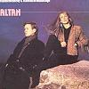

Celtic Lyrics Corner > Artists & Groups > Altan > Altan > Tá Mo Chleamhnas A Dhéanamh
|
 |
Tá Mo Chleamhnas A Dhéanamh |
| Credits : | Traditional; arranged by Frankie Kennedy, Mairéad Ní Mhaonaigh, Mark Kelly, Ciarán Curran & Dónal Lunny |
| Appears On : | Altan ; The Best Of Altan |
| Language : | Gaeilge (Irish Gaelic) & English |
Lyrics :
Tá mo chleamhnas 'a dhéanamh inniu agus inné
'S ní mó ná go dtaitníonn an bhean udaí liom féin
Ach fuígfidh mé mo dhiaidh í, 's rachaidh mé leat féin
Síos fána coille craobhaigh
A match was a-making here last night
And it isn't with the girl that I love the best
I'll leave her behind and I'll go along with you
Down by the banks of the ocean
'Mo codladh go h-eadarshuth b'aite liom féin
Leabaí luachair a bheith faoi mo thaobh
Buideal brandaí a bheith faoi mo cheann
'S mo chailín deas óg 'bheith ar lámh' liom
Sleeping to milking time is my delight
A bed of green rushes underneath my side
A bottle of brandy underneath my head
And a charming young maid in my arms
Shiúil mise thoir agus shiúil mise thiar
Shiúil mise Corcaigh 'gus sráideanna Bhaile' Cliath
Macasamhail mo chailín ní fhaca mise riamh
'Sí 'n bhean í a d'fhág mo chroí cráite
Oh I walked east and I walked west
I walked Cork and Dublin's streets
An equal to my love I didn't meet
She's the wee lass that's left my heart broken